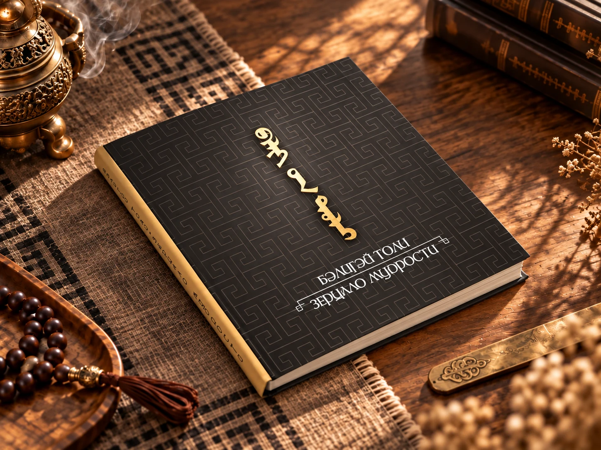
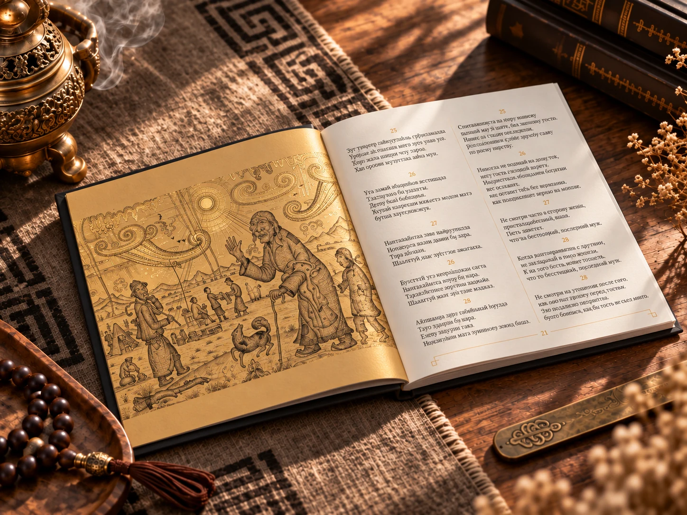
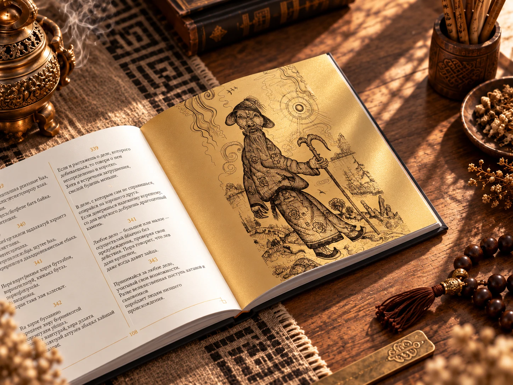
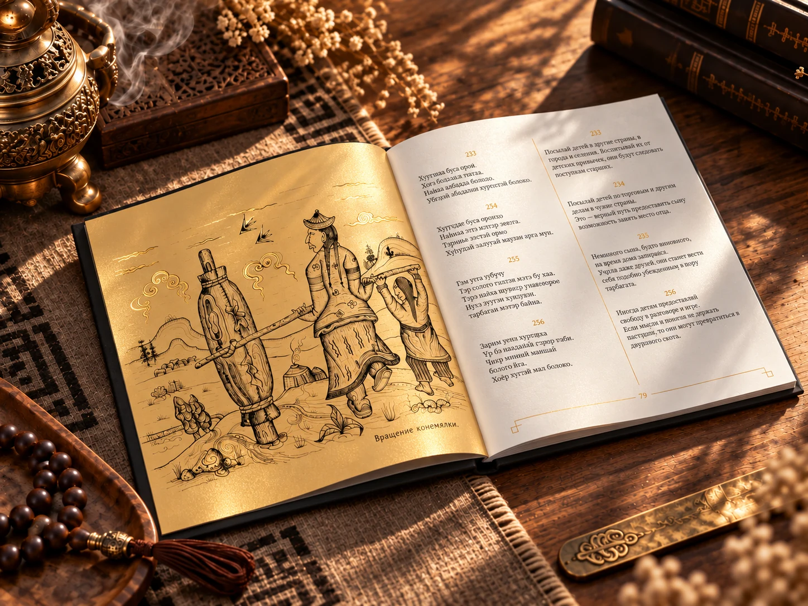

БЭЛИГЭЙ ТОЛИ / КНИЖНЫЙ ДИЗАЙН
Зерцало мудрости

О КНИГЕ
Тысяча четверостиший.
Живая традиция.
«Зерцало мудрости» («Бэлигэй толи») — произведение бурятского поэта-философа и буддийского учёного Эрдэни-Хайбзуна Галшиева (1855–1915). Тысяча четверостиший объединяет нравственные наставления и советы о повседневной жизни. Книга принадлежит традиции субхашита — кратких поучительных изречений.
В представленном издании тексты на бурятском и русском языках расположены рядом. Перевод и предисловие — Ц.-А. Дугар-Нимаев. Издательство «НоваПринт», Улан-Удэ, 2020.
ОФОРМЛЕНИЕ
Чёрный, золото
и книжная графика.
Квадратный формат, тёмная обложка с орнаментом и золотым тиснением. Внутри — печать золотой и чёрной красками, иллюстрации и спокойная двуязычная вёрстка.



Автор — Эрдэни-Хайбзун Галшиев.
Перевод и предисловие — Ц.-А. Дугар-Нимаев.
Графика — Ц.-Н. Очиров.
Дизайн и вёрстка — Александр Курбатов.
Сведения об издании и участниках — по выходным данным книги.
Перевод и предисловие — Ц.-А. Дугар-Нимаев.
Графика — Ц.-Н. Очиров.
Дизайн и вёрстка — Александр Курбатов.
Сведения об издании и участниках — по выходным данным книги.